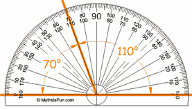

Using a Protractor
This is a protractor, it helps you measure angles (in degrees):

Protractors are fun and easy to use
Have a look at this animation (press the play button) to see how to make a neat angle using a protractor and ruler:
Measuring

Protractors usually have two sets of numbers going in opposite directions.
Be careful which one you use!
When in doubt think "should this angle be bigger or smaller than 90° ?"
Have a Go Yourself!
Try to measure the angles A, B and C inside the triangle. Drag the protractor and rotate it using arrow keys.
images/protractor-angle.js
Be careful which angle you read from the protractor. Hint: if you get them all correct, they will add up to 180°.
1812, 1813, 1814, 1815, 3320, 3321, 3322, 3323, 3324, 3325